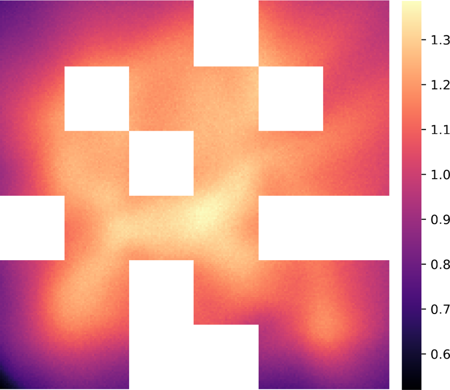
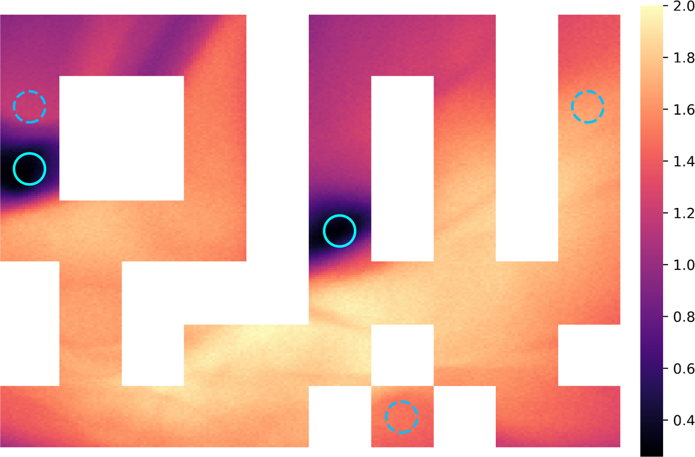
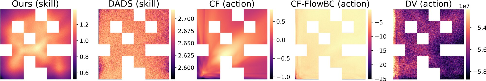
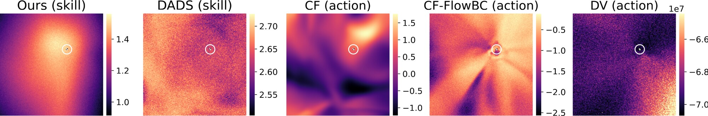

Large, unlabeled datasets of prior experience have become increasingly available for agentic tasks in domains such as robotics and coding. A common recipe for these tasks is to train a policy using the prior data, and then further improve it with online rollouts. But while much work has studied how to use both the offline and online data for policy extraction, far less work has been done to understand how the prior data can be used to efficiently explore during the online learning phase. Previous work has attempted to formalize this idea by defining the empowerment, a measure of how many future states an agent can realize; states with higher empowerment require more exploration as there are more futures to explore. However, existing methods for estimating empowerment require online policy rollouts in the environment. We propose the first method for estimating empowerment from unlabeled prior data, without any environment interaction. By jointly learning an empowerment-maximizing policy together with its discounted state-occupancy measure, our estimator can be trained on unlabeled trajectories generated from any unknown policy. We demonstrate that our empowerment estimator qualitatively gives intuitive empowerment measures and show that the pretrained estimator can be used to improve exploration in the online goal-conditioned reinforcement learning setting.
Where should an agent explore?
Online exploration is a challenging yet central problem in reinforcement learning, where the agent must traverse the environment to seek out novel states with potentially high reward values. Previous methods tend to place equal weights across all states in the prior, where the agent is optimized to visit all of these states until all of them have been visited. This is suboptimal as some states naturally grant the agent more control over what it could do (e.g., picking up a key lets the agent open a door to a new room).
A natural way to characterize the idea above is to consider empowerment (Klyubin et al., 2005), a metric that measures to what degree an agent can influence its future states via its actions. States with high empowerment have many distinct future outcomes that the agent can achieve by taking distinct sequences of actions. Because these high-empowerment states have more future outcomes, it seems reasonable to explore more around these states as an agent has the potential to discover more future outcomes or behaviors. Conversely, in low-empowerment states, there is very little that an agent can do to influence its future outcome, so it should spend less time exploring these regions of the state space as there is less strategic value to be gained.
Luckily, in many practical environments, we have prior data in the form of unlabeled trajectories. Ideally, we would like to use the prior data to inform us how to explore online, but estimating empowerment purely from offline data is difficult: existing empowerment estimators rely on online samples where a skill-conditioned agent must interact with the environment during the optimization. Existing empowerment estimators look at whether the outcomes achieved by a policy align with its intentions; however, offline, we do not know the policy's intention.
Defining empowerment
Empowerment quantifies the maximal influence an agent can exert over its future outcomes from a given state, typically measured as the channel capacity between a control or intention and a future outcome. We use the definition from Gregor et al. (2017), which defines the empowerment in state \(s\) as the maximum possible mutual information between a uniformly-distributed random latent skill \(z \in \mathcal{Z} = \{1, \dots, K\}\) and the resulting future state \(s^+\), conditioned on the current state:
We call this the potential or maximal empowerment. Intuitively, empowerment should be high when a policy can realize a diverse set of outcomes where each outcome corresponds to a distinct skill. For example, an agent stuck in the dead end of a maze has very low empowerment, as its actions have almost no outcome.
While potential empowerment represents the theoretical maximum control, evaluating it directly would require searching over all policies. Instead, we can define the effective empowerment as a lower bound induced by a specific, known policy \(\pi\):
where \(p^z(s^+ \mid s)\) is the discounted state occupancy measure of skill \(z\), and \(\tilde{\mathcal{E}}(s;\pi) \le \mathcal{E}(s)\), with equality for the maximizing \(\pi\). Our method iteratively discovers a policy to maximize this effective empowerment, thereby approximating the potential empowerment \(\mathcal{E}(s)\), using samples \((s, a, s')\) from an offline dataset \(\mathcal{D}\).
An algorithm for offline empowerment
The key insight is that the effective empowerment of a policy depends on that policy only through its discounted state occupancy measures, which can be learned off-policy using temporal differences. Our method jointly learns three components:
Occupancy models
\(Q^z_\theta(s^+ \mid s,a)\) and \(V^z_\theta(s^+ \mid s)\) for a skill-conditioned policy, learned by TD on offline transitions.
Policy
\(\pi(a \mid s, z)\), trained to maximize the effective empowerment computed from these models so that it approaches the potential empowerment \(\mathcal{E}(s)\).
Empowerment estimator
\(\hat{\mathcal{E}}(s)\), read off from these models once training has converged.
Learning the occupancy measure
To evaluate effective empowerment offline, we must estimate the distribution of future states without environment interactions. Because \(s^+\) is drawn from a geometric mixture over future time steps, the occupancy measures satisfy a Bellman-style recursion:
This recursion can be used as a temporal-difference target to learn occupancy measures from off-policy transitions \((s,a,s')\), without rollouts of \(\pi\) itself. Because the empowerment-maximizing policy differs from the behavior policy, these sampled futures are not technically samples from \(p^z(\cdot \mid s, a)\), but the recursive backup allows us to still learn these quantities.
To tractably model these high-dimensional distributions, we project states and actions into a shared representation space of dimension \(d\), and parameterize the log-occupancies as scaled negative Euclidean distances:
This formulation allows us to sample directly from the discounted state-occupancy measure as an isotropic Gaussian in the latent space \(p(\psi \mid \phi) = \mathcal{N}(\phi, \frac{d}{2}I)\), which is needed to compute the empowerment.
Policy optimization via the empowerment gradient
Now that we can learn and sample from the state occupancies, we optimize a policy \(\pi(a \mid s, z)\) to maximize its effective empowerment. We define the \((\pi,z)\)-modified empowerment \(\mathcal{E}_\Delta(s; \pi, z)\), which quantifies the local change in empowerment caused by changing the action distribution of skill \(z\) at \(s\). Increasing this encourages the skill-conditioned policy to take actions that make its future state occupancies under different skills distinguishable. The complete policy objective is:
where \(\alpha_{\text{bc}}\) is a hyperparameter that enforces a behavioral constraint.
Estimating the empowerment
Once training has converged, the learned policy \(\pi\) approximately maximizes the effective empowerment, so its effective empowerment \(\tilde{\mathcal{E}}(s;\pi)\) serves as an estimate of the potential empowerment \(\mathcal{E}(s)\). We compute it by substituting the learned occupancy model \(V^z_\theta\) and approximating the expectation by sampling latents from its Gaussian parameterization:
- Initialize occupancy networks \(Q_\theta, V_\theta\), target networks \(Q_{\bar\theta} \gets Q_\theta\), \(V_{\bar\theta} \gets V_\theta\), and policy \(\pi(a \mid s, z)\)
- for each training step do
- Sample a batch of transitions \((s, a, s') \sim \mathcal{D}\)
- Sample a random state \(s^+ \sim \mathcal{D}\) and a skill \(z \sim \mathrm{Unif}\{1, \dots, K\}\) for each transition
- Compute the occupancy losses \(\mathcal{L}_Q = \mathcal{L}^{\mathrm{boot}}_Q + \mathcal{L}^{\mathrm{self}}_Q\) and \(\mathcal{L}_V\) ▷ TD on offline data
- Sample latent futures \(\psi_{z',m} \sim \mathcal{N}\big(\phi_V(s, z'), \tfrac{d}{2} I\big)\) for each \(z' \in \mathcal{Z}\)
- Sample actions \(a_m \sim \pi(\cdot \mid s, z)\) with the reparameterization trick
- Estimate \(\mathcal{E}_\Delta(s; \pi, z)\), averaging over the samples ▷ empowerment gradient
- Take one gradient step on \(\mathcal{L}_Q + \mathcal{L}_V + \mathcal{L}_\pi\)
- \(\bar\theta \gets \tau \theta + (1 - \tau)\bar\theta\) ▷ Polyak update
- return \(\hat{\mathcal{E}}(s)\) computed from \(V_\theta\)
Offline empowerment maps
Since computing the true empowerment over all policies is intractable in continuous environments, we evaluate the estimator qualitatively, in environments whose structure dictates where the empowerment should be high (e.g., toward the center of a maze rather than in its dead ends). Below is the empowerment recovered by our offline estimator on three OGBench environments; in each case it matches what we intuitively expect.

The empowerment peaks at the maze's two corridor junctions and falls off in dead ends and corners.
Axes are the agent's \((x,y)\) position.

The empowerment collapses at each one-way teleporter entrance, where the agent has no control over its random next state.
Teleporter entrances are shown as solid circles and exits as dashed circles.
With the ball (circled in white) fixed off-center (left) and cornered (right), the empowerment peaks immediately around the ball in both plots, where the ant can freely choose whether to approach, dribble, or move away from it.
Empowerment along real trajectories
We also evaluate the empowerment estimate along real dataset trajectories. Drag across a plot, or press play, to scrub through each trajectory.
Ant-Soccer: approach, kick, walk back, dribble, kick again
antsoccer-arena-navigate · dataset episode, steps 408–600In antsoccer, empowerment rises as the ant approaches the ball, drops sharply the moment it kicks it, and stays low while the ball rolls out of reach, then climbs again as the ant walks back and dribbles, peaking just before the second kick with the ball at its feet.
Cube: grab the block, pick it up, place it down
cube-single-play · one pick-and-place cycleIn cube, empowerment rises as the gripper approaches and grasps the block. Once the arm carries the block up into the air, the empowerment falls: this is because the gripper must stay closed to retain control of the block, giving the agent fewer degrees of freedom to control its future state. Empowerment rises as the arm descends and releases the block; here empowerment is high because, as in antsoccer, the arm can choose to back off from the cube, or grab it and move it.
Rendered frames show the scene at one representative timestep per phase. The \(x\)-axis gives each phase equal width.
Existing estimators fail offline
Our method is the first to learn empowerment in continuous environments from offline data, so there are no direct baselines to compare to; instead, we adapt four existing online empowerment estimators to the offline setting. Online, errors in their learned models (e.g., dynamics or skill labelings) are corrected by fresh data, but offline, these methods suffer distribution shift and approximation errors that bias the estimate. None recovers a comparable map.


DADS-Empowerment saturates at its ceiling of \(\log K\) almost everywhere; CF-Empowerment learns a reasonable estimate, but is noisy and only captures the coarser trends; CF-FlowBC-Empowerment also fails. DV-Empowerment, whose bound is known to suffer from high variance (Song & Ermon, 2020), is virtually unbounded. DADS is skill-empowerment; CF, CF-FlowBC, and DV are action-empowerment.
Online exploration with offline empowerment
We also use the empowerment estimator \(\hat{\mathcal{E}}(s)\), trained on \(\mathcal{D}\) and then frozen, to guide exploration when an agent later solves online, sparse-reward, goal-reaching tasks in the same environment. Our online agents are built on contrastive RL (CRL) (Eysenbach et al., 2022), a goal-conditioned actor-critic, and every online agent is trained with Reinforcement Learning with Prior Data (RLPD) (Ball et al., 2023).
Empowerment bonus. A naive way to use empowerment is to add it as an additional reward; however, this can have the undesired consequence of keeping the policy from leaving high-empowerment states. Instead, we would like the policy to visit high-empowerment states more often so it can explore around them, but not be penalized for leaving those high-empowerment states and continuing its trajectory into other parts of the state space. Consequently, we train a network \(B_\omega(s,a)\) to predict the maximum empowerment reached anywhere along the trajectory containing the transition \((s,a)\):
Since the max is taken over both the future and the history, leaving a high-empowerment state is not penalized, while actions that lead to one are rewarded. The policy then maximizes
Because our bonus only adds a term to the policy objective, it can be combined with other exploration methods. We test the effect of combining our empowerment bonus with Random Network Distillation (RND) (Burda et al., 2019) and also adding it to the SUPE (Wilcoxson et al., 2025) high-level policy loss.
On cube-single-play and pointmaze-teleport-stitch, adding the empowerment bonus improves over baseline CRL, enabling faster learning and higher performance. On antsoccer-arena-navigate, our method still performs on par with CRL and does not hurt performance. Our method can also be combined with existing exploration methods: adding the empowerment to CRL + RND leads to improved performance on cube-single and pointmaze-teleport over RND alone.
Takeaways
In this work we introduced a method for estimating empowerment purely from offline data, by jointly learning an empowerment-maximizing policy together with its discounted state-occupancy measure. Unlike prior methods, which rely on online rollouts of a skill-conditioned policy, our estimator trains on unlabeled offline trajectories and recovers an intuitive empowerment landscape across OGBench environments. Our results show that the estimator can be used to improve online exploration on sparse, goal-conditioned RL tasks. Beyond exploration, our estimator is general, and we hope future work will apply it to other problems and domains.
BibTeX
@article{garg2026offlineempowerment,
title = {Measuring Empowerment from Offline Data for Intrinsically Motivated Exploration},
author = {Garg, Ishir and Myers, Vivek and Li, Qiyang and Ji, Catherine and Eysenbach, Benjamin and Levine, Sergey},
journal = {arXiv preprint},
year = {2026}
}